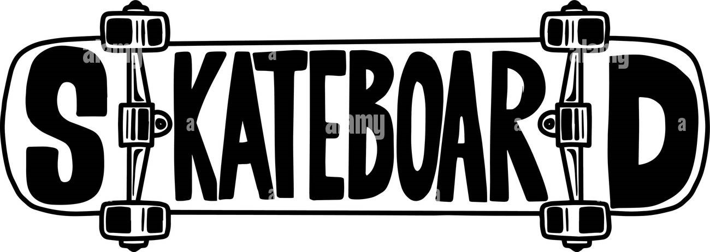

Bem-vindo ao PJSkaterss!
Este site foi criado como parte de um projeto de faculdade, com o objetivo de explorar e apresentar a cultura, história e universo do skate. Aqui você vai encontrar desde informações sobre manobras clássicas até eventos atuais e skatistas lendários.
Explore as páginas acima e mergulhe de cabeça no estilo de vida sobre quatro rodas!
